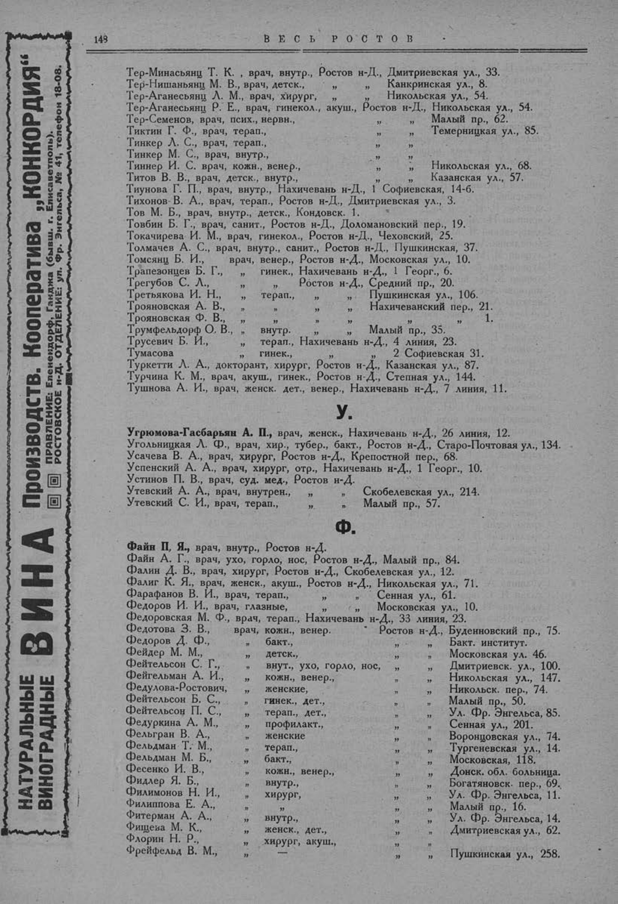

Лист источника 198
Скан

Распознанный текст
НАТУРАЛЬНЫЕ
ВИНОГРАДНЫЕ
ВИНА
Производств. Кооператива „КОНКОРДИЯ“
ПРАВЛЕНИЕ: Еленендорф, Ганджа (бывш. г. Елисаветполь).
РОСТОВСКОЕ н-Д. ОТДЕЛЕНИЕ: ул. Фр. Энгельса, № 41, телефон 18-08.
148
ВЕСЬ РОСТОВ
Тер-Минасьянц Т. К. , врач, внутр., Ростов н-Д., Дмитриевская ул., 33.
Тер-Нишаньянц М. В., врач, детск., „ „ Канкринская ул., 8.
Тер-Аганесьянц Л. М., врач, хирург, „ „ Никольская ул., 54.
Тер-Аганесьянц Р. Е., врач, гинекол., акуш., Ростов н-Д., Никольская ул., 54.
Тер-Семенов, врач, псих., нервн., „ „ Малый пр., 62.
Тиктин Г. Ф., врач, терап., „ „ Темерницкая ул., 85.
Тинкер Л. С., врач, терап., „ „
Тинкер М. С., врач, внутр., „ „
Тиннер И. С. врач, кожн., венер., „ „ Никольская ул., 68.
Титов В. В., врач, детск., внутр., „ „ Казанская ул., 57.
Тиунова Г. П., врач, внутр., Нахичевань н-Д., 1 Софиевская, 14-б.
Тихонов-В. А., врач, терап., Ростов н-Д., Дмитриевская ул., 3.
Тов М. Б., врач, внутр., детск., Кондовск. 1.
Товбин Б. Г., врач, санит., Ростов н-Д., Доломановский пер., 19.
Токачирева И. М., врач, гинекол., Ростов н-Д., Чеховский, 25.
Толмачев А. С., врач, внутр., санит., Ростов н-Д., Пушкинская, 37.
Томсянц Б. И., врач, венер., Ростов н-Д., Московская ул., 10.
Трапезонцев Б. Г., „ гинек., Нахичевань н-Д., 1 Георг., 6.
Трегубов С. Л., „ „ Ростов н-Д., Средний пр., 20.
Третьякова И. Н., „ терап., „ „ Пушкинская ул., 106.
Трояновская А. В., „ „ „ „ Нахичеванский пер., 21.
Трояновская Ф. В., „ „ „ „ „ „ 1.
Трумфельдорф О. В., „ внутр. „ „ Малый пр., 35.
Трусевич Б. И., „ терап., Нахичевань н-Д., 4 линия, 23.
Тумасова „ гинек., „ 2 Софиевская 31.
Туркетти Л. А., докторант, хирург, Ростов н-Д., Казанская ул., 87.
Турчина К. М., врач, акуш., гинек., Ростов н-Д., Степная ул., 144.
Тушнова А. И., врач, женск. дет., венер., Нахичевань н-Д., 7 линия, 11.
У.
Угрюмова-Гасбарьян А. П., врач, женск., Нахичевань н-Д., 26 линия, 12.
Угольницкая Л. Ф., врач, хир., тубер., бакт., Ростов н-Д., Старо-Почтовая ул., 134.
Усачева В. А., врач, хирург, Ростов н-Д., Крепостной пер., 68.
Успенский А. А., врач, хирург, отр., Нахичевань н-Д., 1 Георг., 10.
Устинов П. В., врач, суд. мед., Ростов н-Д.
Утевский А. А., врач, внутрен., „ „ Скобелевская ул., 214.
Утевский С. И., врач, терап., „ „ Малый пр., 57.
Ф.
Файн П. Я., врач, внутр., Ростов н-Д.
Файн А. Г., врач, ухо, горло, нос, Ростов н-Д., Малый пр., 84.
Фалин Д. В., врач, хирург, Ростов н-Д., Скобелевская ул., 12.
Фалиг К. Я., врач, женск., акуш., Ростов н-Д., Никольская ул., 71.
Фарафанов В. И., врач, терап., „ „ Сенная ул., 61.
Федоров И. И., врач, глазные, „ „ Московская ул., 10.
Федоровская М. Ф., врач, терап., Нахичевань н-Д., 33 линия, 23.
Федотова З. В., врач, кожн., венер. Ростов н-Д., Буденновский пр., 75.
Федоров Д. Ф., „ бакт., „ „ Бакт. институт.
Фейдер М. М., „ детск., „ „ Московская ул. 46.
Фейтельсон С. Г., „ внут., ухо, горло, нос, „ „ Дмитриевск. ул., 100.
Фейгельман А. И., „ кожн., венер., „ „ Никольская ул., 147.
Федулова-Ростович, „ женские, „ „ Никольск. пер., 74.
Фейтельсон Б. С., „ гинек., дет., „ „ Малый пр., 50.
Фейтельсон П. С., „ терап., дет., „ „ Ул. Фр. Энгельса, 85.
Федуркина А. М., „ профилакт., „ „ Сенная ул., 201.
Фельгран В. А., „ женские „ „ Воронцовская ул., 74.
Фельдман Т. М., „ терап., „ „ Тургеневская ул., 14.
Фельдман М. Б., „ бакт., „ „ Московская, 118.
Фесенко И. В., „ кожн., венер., „ „ Донск. обл. больница.
Фидлер Я. Б., „ внутр., „ „ Богатяновск. пер., 69.
Филимонов Н. И., „ хирург, „ „ Ул. Фр. Энгельса, 11.
Филиппова Е. А., „ „ „ „ Малый пр., 16.
Фитерман А. А., „ внутр., „ „ Ул. Фр. Энгельса, 14.
Фищева М. К., „ женск., дет., „ „ Дмитриевская ул., 62.
Флорин Н. Р., „ хирург, акуш., „ „
Фрейфельд В. М., „ „ Пушкинская ул., 258.